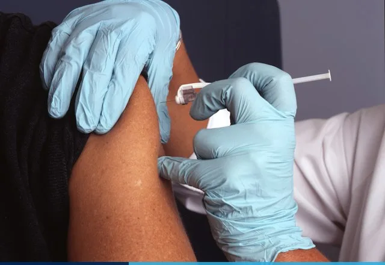

7 Essential Home Medical Devices for Accurate Virtual Doctor Visits
From Bluetooth pulse oximeters to digital ear scopes: how to build a hospital-ready home diagnostic drawer.
Combining ultra-low-latency 5G connectivity with on-device neural ECG analysis now enables UK paramedics and virtual consultants to diagnose acute coronary syndromes and ischemic stroke patterns 42 minutes faster than standard hospital transfer pathways.
Every article is written by a practicing UK physician and fact-checked against current NICE clinical guidelines.
From Bluetooth pulse oximeters to digital ear scopes: how to build a hospital-ready home diagnostic drawer.
How cryptographic prescription tokens work across 980+ UK pharmacies and how to automate chronic refills.
Clinical trial evidence showing 34% higher therapy completion rates when patients attend CBT from home.
How continuous 7-day wearable ECG telemetry captures intermittent arrhythmias missed by 10-second clinic ECGs.

A parent's checklist for childhood fevers, rashes, croup, and ear infections—plus red-flag signs.
Inside WebRTC AES-256 video encryption, biometric MFA, and sovereign UK health cloud storage.
Authored by 12 Harley Street consultants, this 48-page illustrated handbook covers normal vs. abnormal home blood pressure, SpO2, ECG, and pediatric temperature charts—plus how to prepare for any virtual consultation.
Every guide published on Stackly Telemedicine undergoes double-blind peer review by two GMC-certified specialists.
Senior Consultant in Internal Medicine & Digital Diagnostics (GMC #6894120)
Oversees clinical evidence grading, NICE guideline alignment, and annual content revalidation.
Director of Wearable Biometrics & Clinical AI Validation (GMC #7103942)
Reviews all medical device evaluations, ECG algorithm studies, and remote monitoring protocols.
Have a question about an article, want to request our free 2026 Home Telemedicine Handbook, or ready to schedule a video consultation? Complete the validated form below.
221B Harley Street, Marylebone, London W1G 9QT, United Kingdom
All fields are required. Name accepts alphabets only; Phone accepts numbers only; Past dates are restricted.